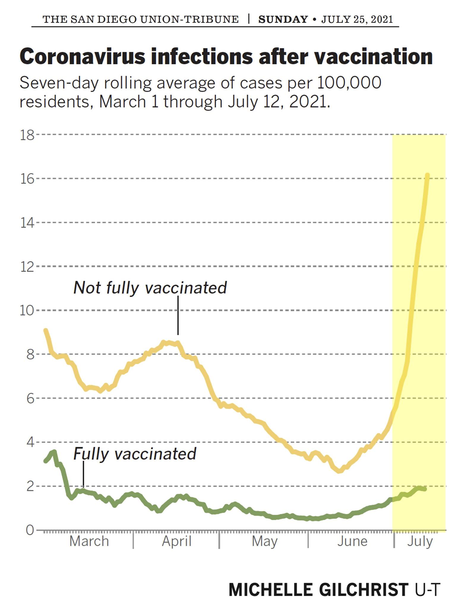

To all my friends who are still unvaccinated:
It is a personal choice, and I respect your freedom to make it. And I still care about you.
However, there is also a public health consequence. The R value for vaccinated people passing to vaccinated people is far below 1. This means that even with breakthroughs, the virus will go away eventually if enough people get vaccinated.
Because you refuse to vaccinate, you will likely catch it, and the case will be worse, and you will be more likely to transmit it. Each time a cell divides, there is a chance for mutation. So you catching it without a vaccine means a much stronger case, more cell growth, more chances. If we play this game long enough, there will be a new variant which totally evades the vaccines.

But maybe it's not as big a deal as people say? Many non-vaccinated people in the US asked me if they thought the COVID death numbers were real - suggesting it was exaggerated by interests pushing an agenda.
I can tell you with certainty, the numbers are absolute fabrications. Governments are lying.
The numbers are much worse.
I was in India during the 2nd wave. The government reported 450,000 deaths, but it's likely that *4 million people* died in 3 months. For reference, the holocaust is estimated at 6MM deaths in 4 years.
Sources:
(https://cgdev.org/.../three-new-estimates-indias-all... - study, https://www.indiatoday.in/.../2nd-covid-wave-was-india... - news article).
It was horrible. Delta ripped through and for a month, I don't think a day went by when one of my friends or colleagues didn't lose a parent. There was a black market for everything. Oxygen was $1k+ a day, people could not find wood to burn the dead in open parking lots because the crematoriums were full.
I sincerely encourage you to reevaluate your beliefs in light of the:
a). Very clear effectiveness of vaccines (see image) and
b). The very clear danger of this disease (especially the Delta variant).
Although he was not someone whose religious views I agree with, this quote from evangelist Desmond Ford is apropos:
"A wise man changes his mind sometimes, but a fool never. To change your mind is the best evidence you have one."
I don't trust governments or corporations. But setting aside that concern, given the evidence, this is a question of how we want the next generation's lives to play out. How many orphans is this world willing to absorb? How many people will suddenly lose their parents at 50 or 60 years old without being able to say good bye?
Could vaccines have long term detrimental side effects? Yes, absolutely. No way to know for sure. We have science which shows us it would be unlikely, but nothing 100% conclusive. This is a maybe.
Will Covid kill millions more if the global population is not vaccinated... at this point, it is a near certainty. So please consider the choices and the risks and make a new decision.
Thank you